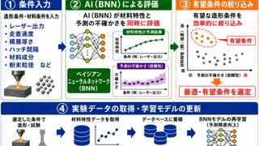
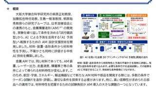
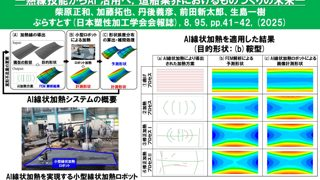
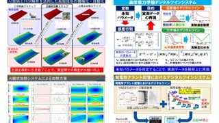
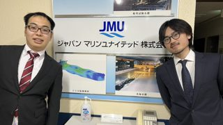
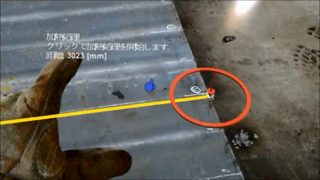

※画像は生成AIで作成したイメージです。このテーマの説明文は準備中です。
関連するページ
関連するお知らせ（題名から自動で集めたもの。23件）

『阪大など、金属積層造形をAI支援 高性能部品 の 開発費削減』というタイトルで、「9/16 日刊工業新聞」に掲載されました。
大阪大学 接合科学研究所の柴原正和 教授、加藤拓也 特任助教、生島一樹 准教授、桐原聡秀 教授らの研究グループは、日本溶接協会との連携のもと、金属積層造形(AM)の開発を、実験を繰り返して条件を決める「試行錯誤型」から、AIによる予測を活用する「AI予測型」へ転換するためのAM設計支援技術を開発しました。 報告：JMU津事業所を訪問し、柴原研究室と共同開発している AI 線状加熱ロボットの製造現場における運用状況を見学しました。
報告：JMU津事業所を訪問し、柴原研究室と共同開発している AI 線状加熱ロボットの製造現場における運用状況を見学しました。
記事掲載：柴原正和 教授、加藤拓也 さん 他が執筆した、開発中の「AI線状加熱」に関する解説記事が「ぷらすとす(日本塑性加工学会会報誌)」に掲載されました。 報告：柴原研究室・生島研究室合同の冬季中間発表会が行われました。FEM等の数値シミュレーションを活用した溶接、接合、ひずみ取り、プレス、切削、金属積層造形、AI、デジタルツイン等に関する幅広い内容の研究発表が行われ、活発な議論がなされました。
報告：柴原研究室・生島研究室合同の冬季中間発表会が行われました。FEM等の数値シミュレーションを活用した溶接、接合、ひずみ取り、プレス、切削、金属積層造形、AI、デジタルツイン等に関する幅広い内容の研究発表が行われ、活発な議論がなされました。 報告：JMU津事業所を訪問し、柴原研究室と共同開発している AI 線状加熱ロボットの製造現場における運用状況を見学しました。
報告：JMU津事業所を訪問し、柴原研究室と共同開発している AI 線状加熱ロボットの製造現場における運用状況を見学しました。 特許：柴原正和 教授、D3 加藤拓也 さん、生島一樹 准教授、前田新太郎 特任助教、D2 山内悠暉 さんが、機械学習を用いた固有変形決定方法に関する特許を取得しました。
特許：柴原正和 教授、D3 加藤拓也 さん、生島一樹 准教授、前田新太郎 特任助教、D2 山内悠暉 さんが、機械学習を用いた固有変形決定方法に関する特許を取得しました。 柴原研究室・生島研究室合同の秋季中間発表会が行われました。FEM等の数値シミュレーションを活用した溶接、接合、ひずみ取り、プレス、切削、AI、デジタルツイン等に関する幅広い内容の研究発表が行われ、活発な議論がなされました。
柴原研究室・生島研究室合同の秋季中間発表会が行われました。FEM等の数値シミュレーションを活用した溶接、接合、ひずみ取り、プレス、切削、AI、デジタルツイン等に関する幅広い内容の研究発表が行われ、活発な議論がなされました。
論文：溶接学会論文集に投稿していた14本の論文が本年7月に採択されました。今回は、その中から【AI線状加熱およびデジタルツインに関する研究】に関する5本の論文をご紹介いたします。 報告：日刊工業新聞一面記事に掲載されたAI線状加熱(柴原研究室開発のシミュレーター)の内容がWeb版にも掲載されました。
報告：日刊工業新聞一面記事に掲載されたAI線状加熱(柴原研究室開発のシミュレーター)の内容がWeb版にも掲載されました。
報告：加藤拓也さんと佐々木駿伍さん(生島研)がJMU 津事業所を訪問しNEDOインテグレート「AI線状加熱の開発」に関する現地調査会にオブザーバー参加しました。 ジャパンマリンユナイテッド(JMU)と柴原研究室とで行われたNEDOインテグレート「AI線状加熱の開発」の取り組みが『日刊工業新聞一面』に掲載されました。
ジャパンマリンユナイテッド(JMU)と柴原研究室とで行われたNEDOインテグレート「AI線状加熱の開発」の取り組みが『日刊工業新聞一面』に掲載されました。
柴原研究室がJMUと共同で開発を続けている「AI線状加熱」の実用化に関する記事が「海事プレス オンライン」に掲載されました。 JMU津を訪問し、JMU(株)と取り組んでいるNEDOインテグレート「AI線状加熱の開発」に関する実験を行いました。
JMU津を訪問し、JMU(株)と取り組んでいるNEDOインテグレート「AI線状加熱の開発」に関する実験を行いました。 柴原研究室の国際特許(AI線状加熱)がJSTによるヒアリング審査を経て、米国、中国、韓国の3カ国への移行支援が決定しました。
柴原研究室の国際特許(AI線状加熱)がJSTによるヒアリング審査を経て、米国、中国、韓国の3カ国への移行支援が決定しました。
新しい15件を表示しています。すべてのお知らせは一覧から見られます。